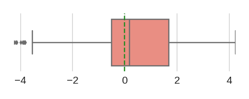
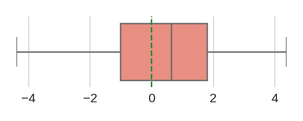

Total sequences = 1733
[90% CI]
positive seq. - negative seq.

[3.23, 10.23]


[2.36, 8.93]

[1.65, 7.13]
| Rank | Motif(s) | Motif logo |
Signed -log10 p-value [90% CI] |
# mutation (% total seq) | # pos mutation (% total mutation) | # neg mutation (% total mutation) | Median score difference | Mean score difference | Score difference distribution positive seq. - negative seq. |
|---|---|---|---|---|---|---|---|---|---|
| 1 | CTCF | |
6.21 [3.23, 10.23] |
537 (30.99%) | 298 (55.49%) | 239 (44.51%) | 0.29 | 0.5 | |
| 2 | CTCFL | CTCFL | |
5.06 [2.36, 8.93] |
436 (25.16%) | 251 (57.57%) | 185 (42.43%) | 0.18 | 0.51 |  |
| 3 | IRF1 | STAT1 | STAT1::STAT2 | IRF1 | |
3.94 [1.65, 7.13] |
261 (15.06%) | 165 (63.22%) | 96 (36.78%) | 0.65 | 0.6 |  |